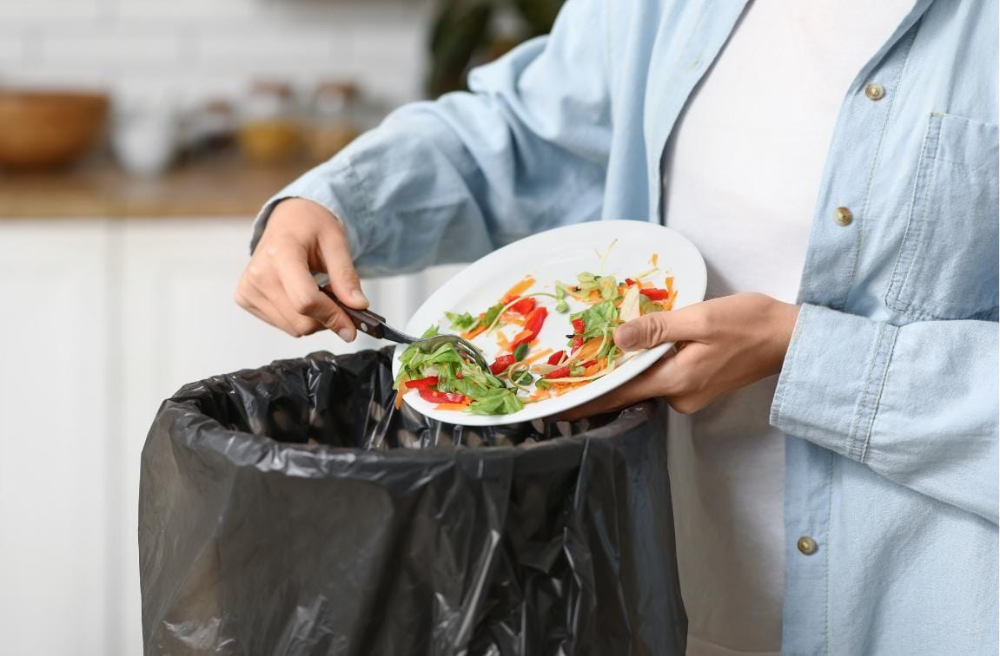
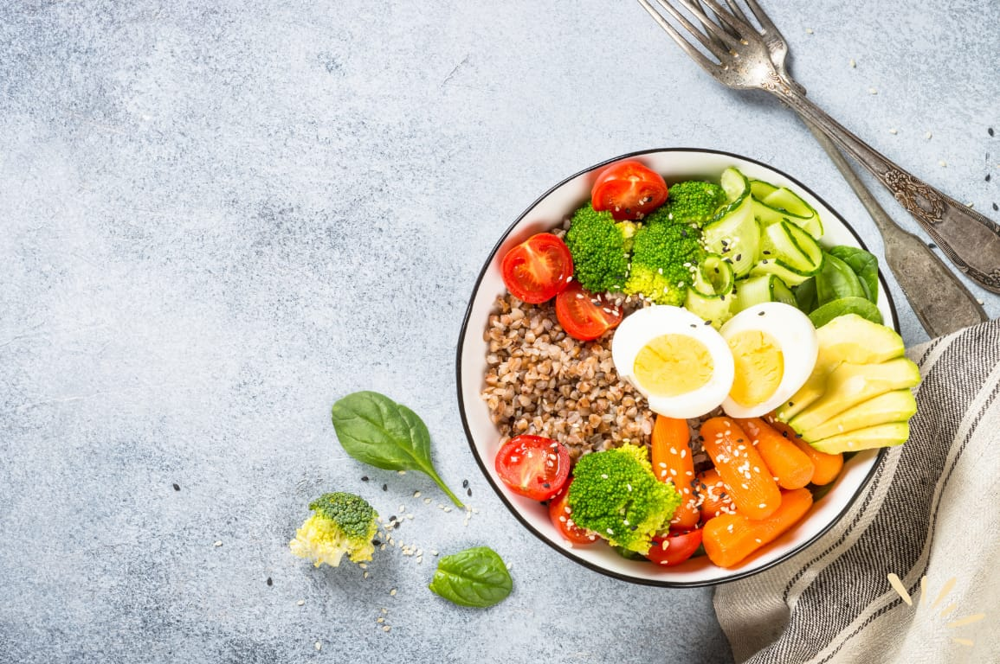

Every meal deserves a second chance
FoodRescue is an educational platform that raises awareness about food waste and encourages more sustainable food consumption among students.
FoodRescue is an educational platform that raises awareness about food waste and encourages more sustainable food consumption among students.
To educate, inspire, and empower student to reduce food waste and build more responsible food habits for a sustainable future.

Food waste is not just about wasted food, but also resources, higher emissions, and greater risk of food insecurity.

🟠 Plan your meals before shopping
🟠 Store food properly to keep it fresh longer
🟠 Serve and only take what you can finish
See More Tips →We're working on new features to make FoodRescue a reality, such as donating surplus food and finding safe, good food near you.